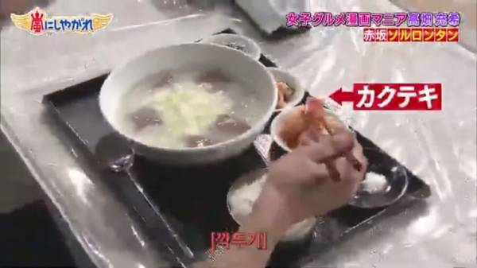
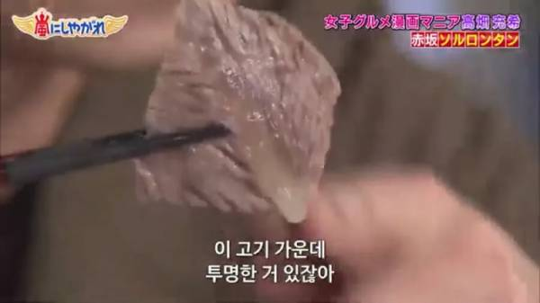
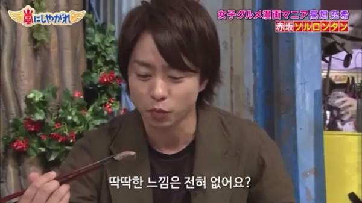

깍두기가 메인이긴해



깍두기가 메인이긴해
회가 초장 발사대인 것과 유사
에헤이 먹을 줄 모르네. 회는 간장이지! 부터 쌈장, 된장, 소금, 와사비 순으로 나올 예정.
삼겹살 목살도 초장 발사대 가능?
하?
쌈장이겠지
부어라
한식 잘알이네..
어짜피 국밥류들은 맛이 없으면 도태되기 때문에 조립식이나 찐으로 만드는 국밥집이나 꽤 상향 평준화가 되어있어서
깍두기, 김치가 맛있는 집으로 가게되어있음.
압도적으로 싸거나..
근데 쟤네 왜 설렁탕을 스프라고 불러 서양애들이야 뭐 저런 국물요리 스프라고 하니까 잘 몰라서 그럴 수 있다고 하는데 일본놈들은 지들도 된장국 쳐먹으면서 왜 같은 국물요리를 스프라고 하는거야 그냥 설렁탕이라고 하거나 한국식 고깃국이라고 하지
라멘 국물이랑 하등 다를바 없는데 왜 스프라 부르는지 의문이긴함
라멘 국물도 스프라고 부를걸 ㅋㅋㅋㅋ
라멘 국물도 수프라고 함
ㅇㅎ 그냥 통칭해서 부르는거구나
걍 국물은 거진 스프임
국물보고 스프라캄
쟤넨 국물을 그냥 다 스프라고 부르더라 ㅋㅋ
미나미 거제 갔을때 영상보면
거기서도 라면 국물을 스프라고 부르더라
원래 한식은 반찬이 중요하긴 해
설렁탕은 사골액기스가 보급되면서 솔직히 맛 차이 크게 안남
다만 깍두기는 가게마다 차이가 있어서 특징잡기 좋긴한데 요즘에는 이마저도
감자탕집 유행하면서 퍼진 사이다깍두기가 일반 국밥집에도 많아진건 있음
그래서 나는 깍두기로도 안믿음
국밥류들 순대국이나 설렁탕집이나
수육을 팔고 있는 집이 있다면
맛집인 경우가 많다고 생각함
고기를 삶기는 하고 삶는다면 신경써서 삶을 가능성이 많으니깐
설렁탕집 깍두기 맛없으면 존나 서운하긴해
사실 국밥은 저점이 매우 높아 밑반찬에서 갈리지
탕 자체가 맛없으면 애초에 망해야 하는 집이고
제대로 먹을줄 아네
아씨 외국인+국물 키워드만 보이면 뻑예~ 가 바로 튀어나오네. 인터넷 너무 많이 함
석박지, 깍뚜기가 본체지
설렁탕집에 나오는 김치랑 깍두기 맛 중요하지
석박지 개맛돌이야
ㅋㅋㅋ
저 놈 한식 좀 치네
깍뚜기가 메인인걸 알다니
끽두기 집중하는거 보니까 맛잘알이네 ㅋㅋㅋㅋㅋㅋㅋ
카쿠테키 우메~
소신발언. 설렁탕은 깍두기 발사대다